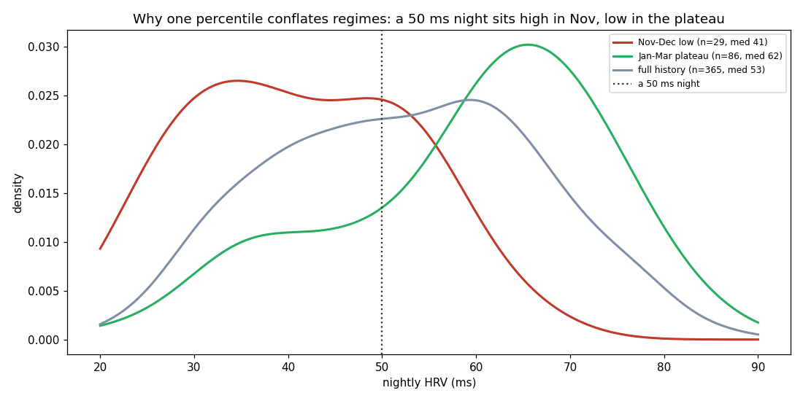
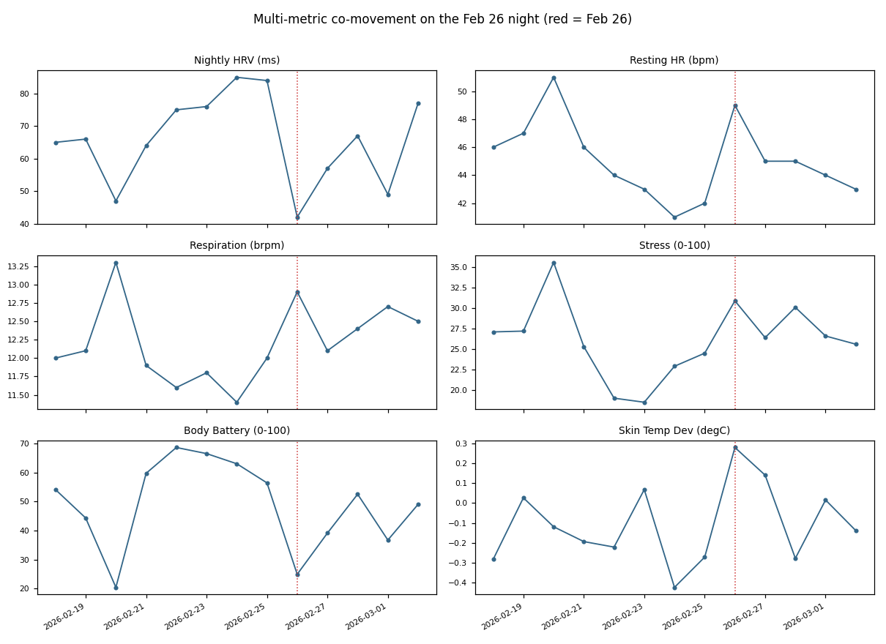
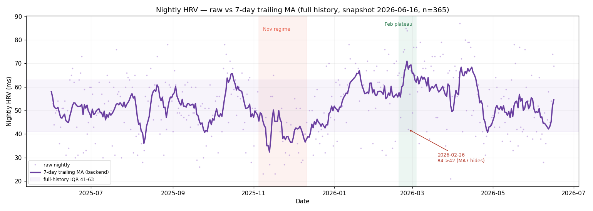
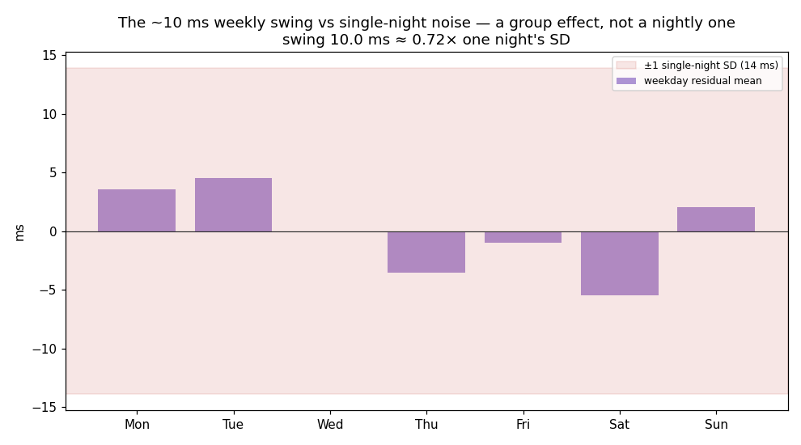
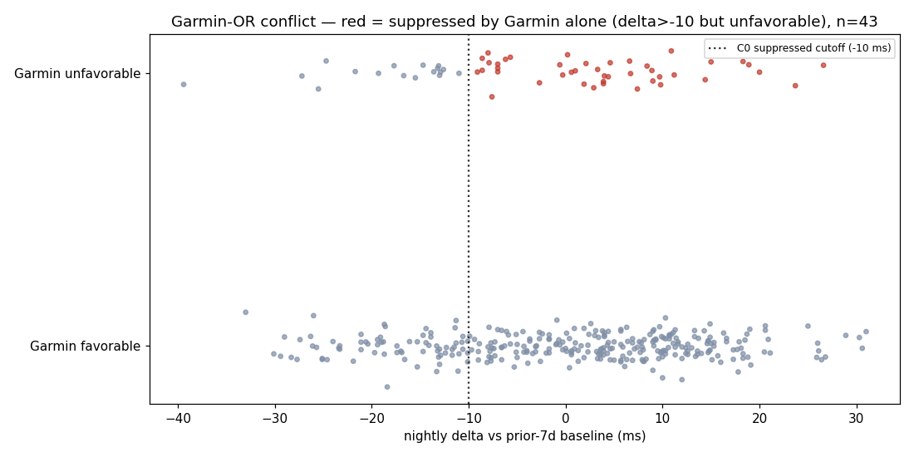

Nightly HRV is the loudest recovery signal on the wrist and the easiest to
over-read. The through-line of every finding here: it is a trend to read, not a
state to threshold — and that principle reshaped every HRV surface in the product.
A continuous signal, not a switch
The foundational HRV finding, and the one the rest inherit.
confident
Nightly HRV is one continuous signal, not two modes.
An earlier look thought the distribution was two-humped — a “good night / bad
night” switch. It isn’t. It’s a single broad, recovery-modulated spread. Low nights are genuine
system-wide low-recovery nights, but they interleave with high nights night to night;
they are not a separate mode you flip into.
One broad peak, not two modes. Bimodality coefficient 0.44 (< 0.555),
and it stays unimodal after regime-detrending (0.39) and within the Jan–Mar plateau. The
two dashed Gaussians fit a low shoulder, not a separated mode. n=344.
So the right way to consume HRV is its level and trend —
never a hard threshold that sorts each night into a category.
Evidence & stats run · hrv-bimodality
Bimodality coefficient
pooled 0.44, detrended 0.39 (threshold 0.555)
Model selection
1-vs-2-component BIC a near-tie; detrended residuals favor one component
Low- vs high-HRV nights
non-HRV recovery composite median −0.86 vs +0.38 — low HRV really is system-wide low recovery
So what. The “two states” reading was an over-interpretation of a broad
distribution. HRV is a continuous gradient modulated by recovery state at the monthly scale.
Read the trend; don’t threshold it into modes — the principle the recovery cue and the
recovery score both inherit.
provisional
A single HRV percentile is meaningless without its window.
Because the whole distribution slides between regimes, the same nightly HRV
ranks at wildly different percentiles depending on the reference window. That’s why the HRV tab
never shows a bare percentile — it always names the baseline window.

Why HRV ever looked two-humped. The Nov–Dec low regime (median 41 ms) and
the Jan–Mar plateau (median 62 ms) are the same distribution shifted; the pooled
history (median 53) is their broad blend. A 50 ms night sits high in November, low in the
plateau. n=365.Evidence & stats run · hrv-distribution-scope
The same night, ranked against three windows (full / last-90 / local regime):
Nov low · 41 ms
p26 / p21 / p55
Plateau · 62 ms
p75 / p84 / p54
Acute dip · 42 ms
p28 / p32 / p17
Shape: median 53, IQR 41–63 ms, skew +0.01, Sarle BC 0.439 (n=365) — one unimodal,
roughly symmetric distribution, reproducing the not-bimodal result.
Volatile night to night
If HRV is a continuous, noisy signal, then no single night should be trusted on its own —
and the way it’s displayed has to respect that.
provisional
A single night can halve — then rebound in two.
On 2026-02-26 raw nightly HRV fell 84 → 42 ms,
then V-rebounded to 57 and 67. It was a real, multi-system event — six recovery metrics all hit
their worst that night, so it wasn’t a sensor glitch — but it was transient. Read the
trend, not any one night.
The dip is transient. Raw nightly HRV plunged 84 → 42 ms then rebounded to
57 / 67 against the ~61 ms baseline (Feb 9 – Mar 9 2026). The −42 ms drop is the 4th-largest
of 334 consecutive-night deltas (z = −2.31).

Real, not a glitch. The same night, six recovery metrics each hit their
worst-recovery extreme (HRV ↓, resting HR ↑, respiration ↑, stress ↑, body battery ↓,
skin-temp ↑) — six independent sensors converging.Evidence & stats run · hrv-feb25-26-drop
The drop
Δ = −42 ms, z = −2.31 vs 334 deltas (SD 18.2); 4th-largest one-night drop
Same-night co-movement
RHR 42→49 bpm · body battery 57→25 · skin-temp −0.3→+0.3 °C · stress 24.5→30.9
Rebound
Feb 27 = 57, Feb 28 = 67 — transient, not a baseline shift
Caveats. Cause inferred (no behavioral logs; sleep duration
absent from the mart); co-metrics are mutually correlated, so they corroborate rather than
independently confirm. This user’s HRV is generally volatile (comparable dips Feb 14/17,
Mar 6) — the magnitude is notable, the kind of event is not rare.
confident
A smoothed-only chart can hide a real crash.
When the dashboard plotted only the 7-day moving average, that 42 ms crash
rendered as a soft 63 (= mean of 84 and 42 at the truncated
left edge). The persisted data was always correct — but the display erased the event. The fix:
show raw nightly values, and seed the moving-average edge.

Read raw, not just the smoothed line. Nightly HRV is a volatile cloud
(~20–87 ms) around its 7-day average; the MA hides true crashes — Feb-26’s raw 42 ms shows as
63. Full history with the IQR band and regime shading. n=365.Evidence & stats run · hrv-feb25-26-drop + hrv-tab-audit
The arithmetic of the display bug, from the API series:
02-25: raw 84, ma7 84
02-26: raw 42, ma7 63# = mean(84, 42) at the truncated edge
02-27: raw 57, ma7 61
Presentation-layer only — the stored value (42) is correct. Resolved by showing raw
nightly values alongside the average and by seeding the MA left edge (_MA_SEED_DAYS).
Stress leads HRV
provisional
A hard day predicts a low HRV the next night.
Daytime stress doesn’t just track the same night’s HRV — it leads the
following night’s, and the lead survives controlling for the next day’s own stress. So a low
HRV the morning after a hard day is largely anticipated, not new information. The
effect is gone within 2–3 nights.
Stress → HRV by lag (Spearman r ± 95% CI). −0.67 same-night, −0.49 the next
night, decaying to noise by +2/+3 — only lag +1 clears the bar. Median next-night HRV is
64 ms after a calm day vs 43 ms after a stressful one. n=342.Evidence & stats run · stress-hrv-lag
Lag +1
Spearman −0.490, CI [−0.572, −0.401], n=342
Survives control
partial (given next-day stress) −0.344; unchanged at −0.341 controlling HRV(D) too — a lead, not a persistence echo
Decay
lag +2 / +3 ≈ −0.15, not reliably distinguishable from 0
Magnitude
median next-night HRV 64 ms (calm day) vs 43 ms (stressful day)
Shared-derivation ceiling. Garmin derives both stress and nightly
HRV from heart-rate variability, so this may partly be one autonomic state measured twice.
Predictive and provisional — not an established independent causal channel.
A weekly rhythm
provisional
A real ~10 ms weekly rhythm rides on top — lowest on Saturday.
Underneath the noise there is a genuine day-of-week pattern: weekday residual
means swing about 10 ms peak-to-trough, the pattern
survives regime de-trending (it even strengthens), and it replicates across
split halves with Saturday lowest in both. It is a group-level rhythm, not a per-night
predictor.
Detrended weekday residual means ± bootstrap 95% CI (ms). Sat (−5.5) and
Thu (−3.5) sit clearly below baseline, Tue (+4.5) above; ~10 ms peak-to-trough, ε² 0.076.
n≈378.

But noise dwarfs it. The ~10 ms weekday swing sits inside a ±14 ms
single-night SD band — a population rhythm, not a one-night forecast.
Useful as context (“my Saturdays read low”), not as a prediction for any single night.
Evidence & stats run · hrv-dow-display
Residual means (ms)
Mon +3.5, Tue +4.5, Wed 0.0, Thu −3.5, Fri −1.0, Sat −5.5, Sun +2.1
Effect size
Kruskal-Wallis ε² 0.076 [0.035, 0.168] — medium; strengthens after de-trending
Bootstrap CIs clear of 0
Sat [−8.9, −2.1], Thu [−6.9, −0.2], Tue [+1.9, +7.1]
Autocorr-preserving null
peak-to-trough p=0.033; ε² p=0.024
Split-half replication
weekday-shape Spearman 0.61; Saturday lowest in both halves
Caveats. ~6% of variance; a single night’s delta SD (~18 ms) is
≈0.56× the whole swing. Under wake-date labeling, “Sat” HRV ≈ Friday-night sleep — name the
weekday label, not the behavioral night. n-of-1, single year/device.
Cueing recovery from HRV
Everything above converges on one product question: how should a daily HRV “recovery” cue be
shown? A pre-registered bake-off settled it.
provisional
No same-night category can be both stable and sensitive.
With a nightly delta this noisy (SD ~13 ms), any fixed or personal
category boundary gets crossed ~2 of every 3 nights — the label flickers. The resolution:
drop the status word. The headline is a continuous signed delta plus a personal
delta_z; the trend cue is a sustained 7-day-vs-30-day drift with an acute override.
Categorical labels flicker regardless of where you cut. Fixed-ms+Garmin
(C0) flips 63% of consecutive nights, personal z-bands (C2) 70%; only dropping the category
(C1) or smoothing to a 7d-vs-30d drift (C3, 12%) is stable. All catch the acute dips. n=378.
# Shipped recovery cue (replaces the fixed −10 / −5 / +8 ms 4-state pill)
headline = signed delta from baseline + personal delta_z# no status word
trend cue = sustained 7d-vs-30d drift + acute override at z ≤ −1.5
garmin = separate chip# shown, never OR-ed into "suppressed"
C0 17% · C1 0% · C3 18% (acceptable — “declining” is an explicit sustained statement)
Acute-dip recall
100% for all four candidates (incl. 2026-02-26) — sensitivity was never the problem; stability was
Provisional. Selects a display/rule shape, not a
validated classifier; personal delta-SD (13.4 ms) will drift, so the z-cutoffs are
illustrative. n-of-1.
provisional
Garmin’s own status belongs on its own chip — never OR-ed in.
Garmin’s built-in HRV status disagrees with the nightly delta often enough that
folding it into “suppressed” corrupts the signal: a third of suppressed nights were
Garmin-only, several with HRV well above baseline. So it’s surfaced as a separate
chip, not merged.

Why it’s never OR-ed. 43 of 132 “suppressed” nights are Garmin-only —
several with HRV +10…+27 ms above baseline. OR-ing Garmin status in would label
good nights as suppressed.Evidence & stats run · hrv-recovery-cue-bakeoff
Garmin-only suppressions
43 of 132 (33%) of “suppressed” nights are driven by Garmin status alone
Contradiction
several at nightly delta +10…+27 ms — HRV above baseline, yet Garmin says suppressed
Decision. Garmin status is informative context, but on a different basis than the
nightly-vs-baseline delta. Show both; never collapse them into one verdict.